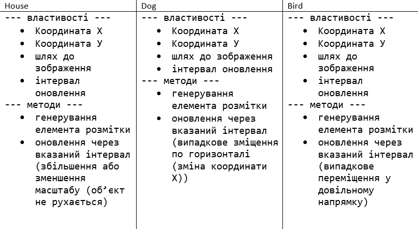

- Задача 1
Створити клас Client
На основі цього класу створити клас GoldenClient
Створити клас Bank, у якому зберігається масив клієнтів. Виконати такі операції
• Вивести усіх простих клієнтів;
• Вивести усіх клієнтів GoldenClient;
• Знати сумарну кількість грошей на рахунку;
- Задача 2

Подумайте яким має бути спільний клас предок. - Задача 3
Користувач задає місяць навчання учня (перевіряти чи є числом, чи від 1 до 12, чи не канікули) та оцінку (перевіряти чи є числом, чи від 1 до 100). Вивести чи зможе він виправити оцінку (якщо оцінка погана і це не останній місяць у семестрі) . Обробку усіх помилок зробити з використанням відповідних класів.